Bab 14 dari 27
Stok Bahan Baku, Baju, Buku, Undangan
14.1 Stok bahan baku
- Tambah bahan dengan satuan (lembar, meter, kg, pcs).
- Catat stok masuk melalui pembelian dan stok keluar melalui pemakaian/penjualan.
- Lakukan penyesuaian stok (stock adjustment) saat opname, dengan alasan yang jelas.
- Tetapkan stok minimum agar muncul peringatan.
Alur CRUD stok bahan baku
Lihat daftar — Menu Stok Bahan Baku menampilkan kartu ringkasan (total jenis, unit fisik, nilai aset, bahan kritis), peringatan dini stok, dan tabel bahan per kategori.
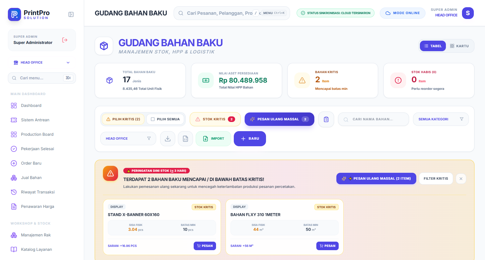
Gambar 14.2 — Daftar bahan baku sebelum perubahan. Tambah bahan — Klik BARU. Form Material Baru terbuka.
Gambar 14.3 — Form material baru yang masih kosong. Isi detail — Masukkan Nama Material, Kategori, Harga Modal per satuan, Harga Jual Acuan, Stok Minimum, Satuan Dasar, dan Cabang. Aktifkan Satuan Bertingkat hanya bila satu kemasan berisi beberapa satuan dasar (contoh: 1 Roll = 224 m²).
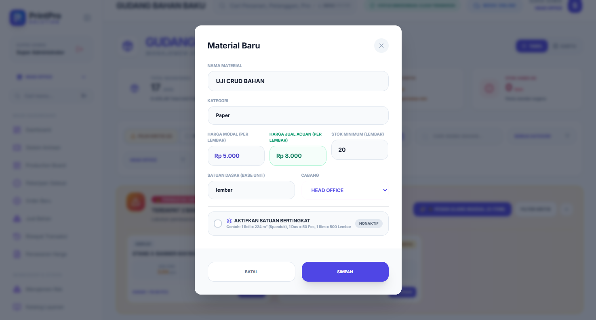
Gambar 14.4 — Data bahan baru yang sudah diisi. Simpan dan verifikasi — Klik SIMPAN. Bahan baru langsung masuk tabel. Karena belum ada stok masuk, sisa fisik bernilai 0 sehingga berstatus HABIS dan ikut masuk peringatan stok kritis.
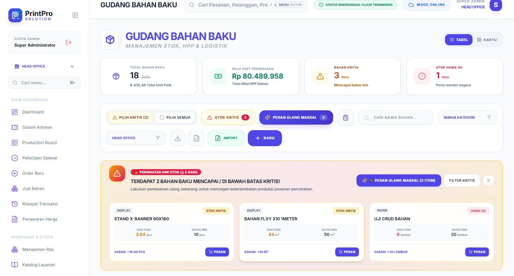
Gambar 14.5 — Bahan baru tampil dengan status HABIS dan peringatan stok. Ubah bahan — Cari bahan pada kolom CARI NAMA BAHAN..., lalu klik tombol Edit Bahan Baku (ikon pensil) pada kolom AKSI GUDANG. Ubah data yang diperlukan.
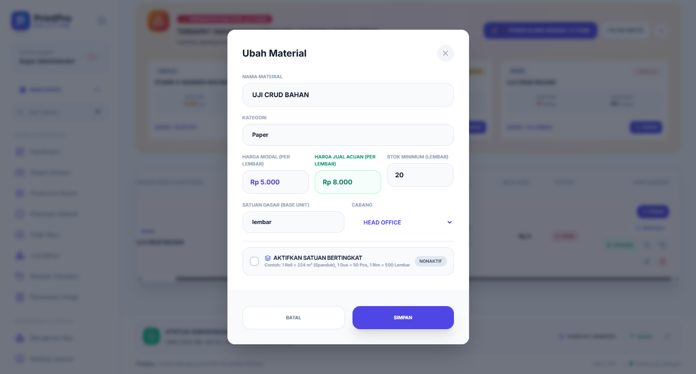
Gambar 14.6 — Form ubah material yang sudah terisi data sebelumnya. Verifikasi perubahan — Setelah SIMPAN, nama dan harga modal baru langsung tampil pada tabel dan kartu peringatan stok.
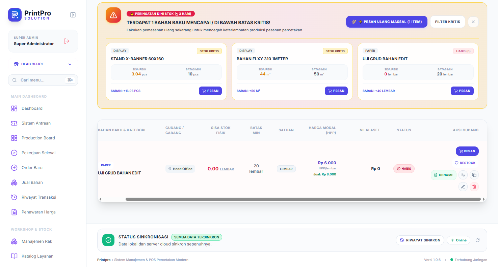
Gambar 14.7 — Nama dan harga modal bahan yang sudah diperbarui. Hapus bahan — Klik tombol Hapus Bahan Baku (ikon tempat sampah) pada kolom AKSI GUDANG, lalu tekan Ya, Hapus pada dialog Hapus Material?.
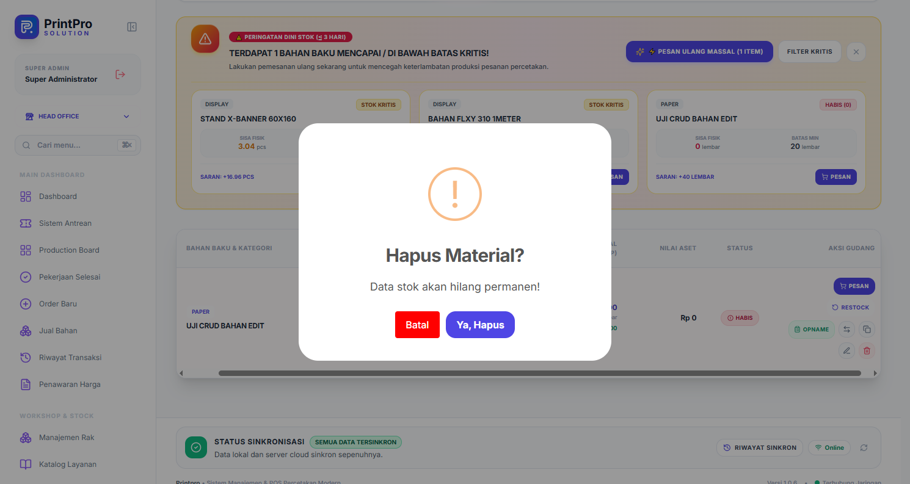
Gambar 14.8 — Dialog konfirmasi hapus material. Verifikasi penghapusan — Muat ulang halaman. Bahan uji tidak lagi muncul dan jumlah Total Bahan Baku kembali ke nilai semula.
Gambar 14.9 — Daftar kembali normal setelah bahan uji dihapus.
Selain CRUD dasar, setiap baris bahan memiliki tombol cepat JUAL (kasir jual bahan), RESTOCK (tambah stok masuk), OPNAME (penyesuaian hasil hitung fisik), Transfer Cabang, dan Clone ke Cabang Lain. Gunakan RESTOCK atau menu Beli Stok untuk mengisi stok bahan yang baru dibuat.
14.2 Stok baju polos
Untuk bisnis apparel:
- Kelola per model, ukuran, dan warna.
- Catat stok masuk dari supplier dan keluar untuk pesanan.
- Gunakan divisi terkait (
DIVISI_JERSEY,DIVISI_SABLON_BORDIR) bila ada.
Alur CRUD stok baju polos
Lihat daftar — Menu Stok Baju Polos menampilkan satu kartu per varian: model, warna, ukuran, bahan, sisa stok, layanan katalog yang ditautkan, harga modal, dan biaya jual tambahan.
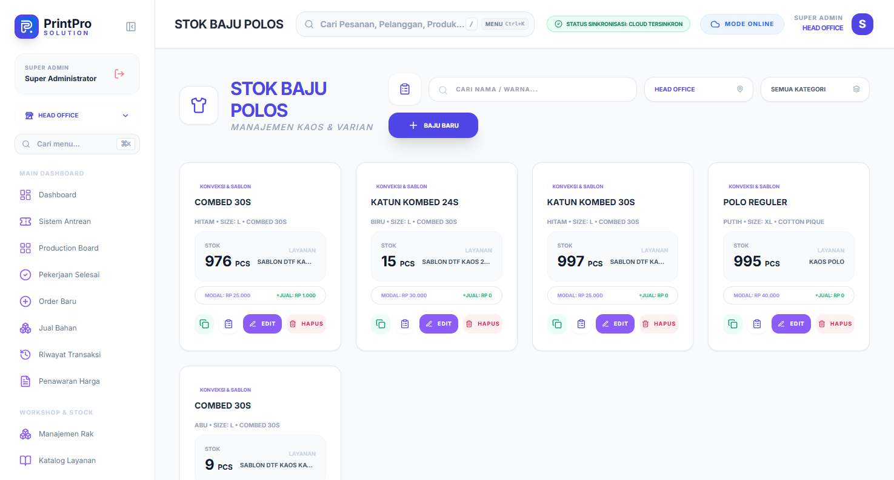
Gambar 14.10 — Daftar varian baju polos sebelum perubahan. Tambah varian — Klik BAJU BARU. Panel Tambah Baju Polos terbuka dengan dua bagian: Penugasan Layanan dan Detail Baju.
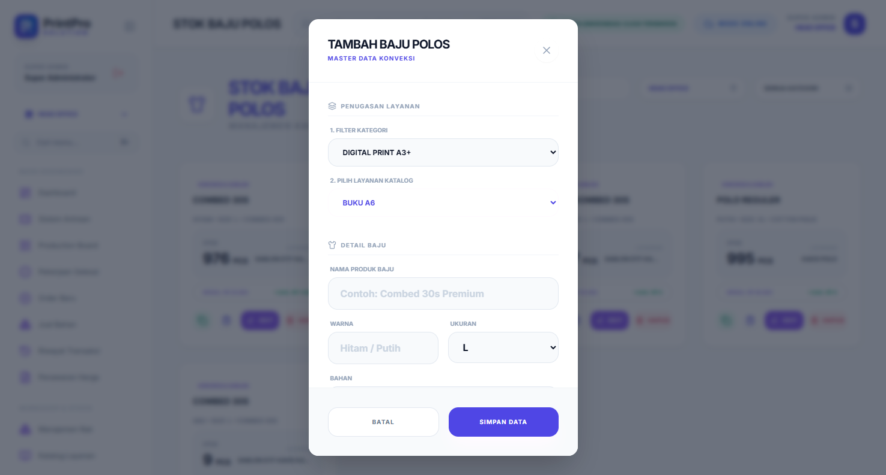
Gambar 14.11 — Form tambah baju polos yang masih kosong. Isi detail — Pilih Filter Kategori lalu Layanan Katalog yang akan ditautkan, kemudian isi nama produk, warna, ukuran, bahan, stok awal, biaya jual tambahan, dan harga modal (HPP kaos).
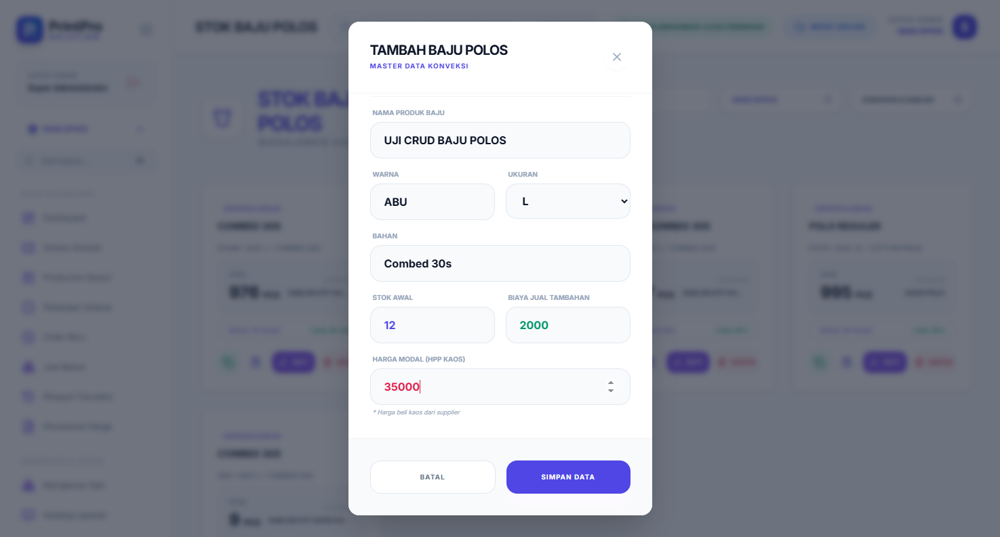
Gambar 14.12 — Data varian baju baru yang sudah diisi. Simpan dan verifikasi — Klik SIMPAN DATA. Kartu varian baru langsung tampil pada daftar.
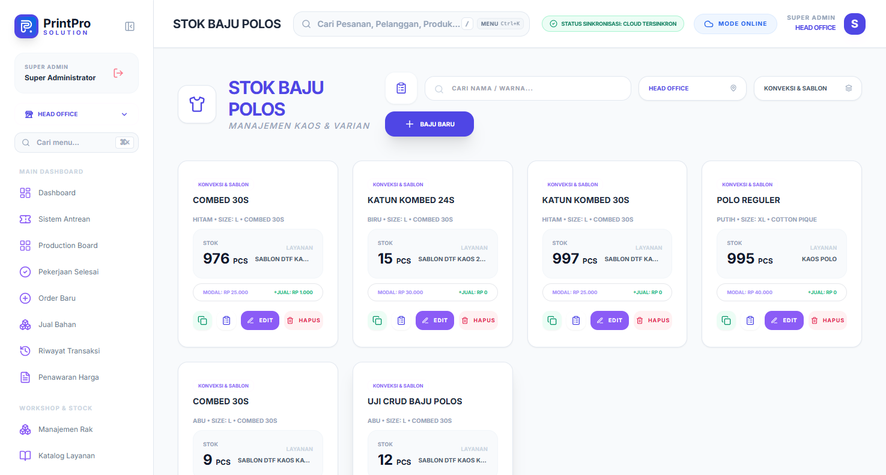
Gambar 14.13 — Varian baju baru tampil pada daftar. Ubah varian — Klik EDIT pada kartu varian. Ubah data yang diperlukan, misalnya nama produk atau warna.
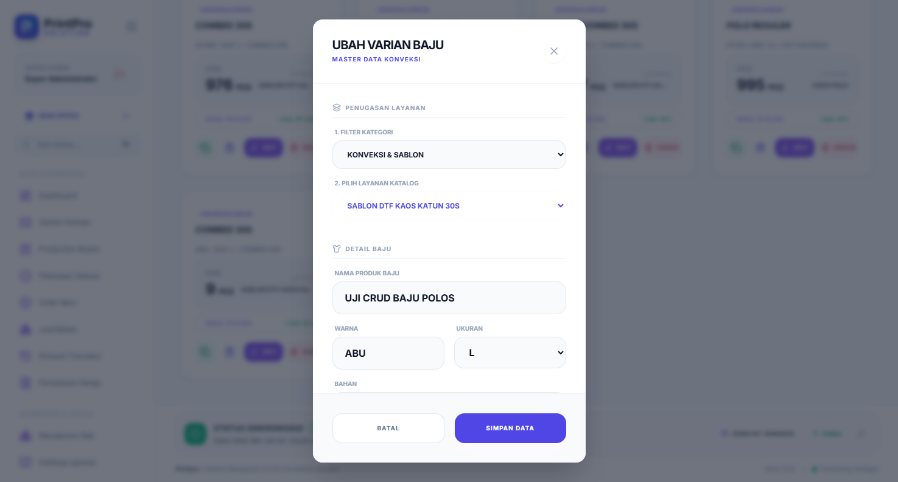
Gambar 14.14 — Panel ubah varian baju yang sudah terisi data sebelumnya. Verifikasi perubahan — Setelah SIMPAN DATA, nama varian baru langsung tampil pada kartu.
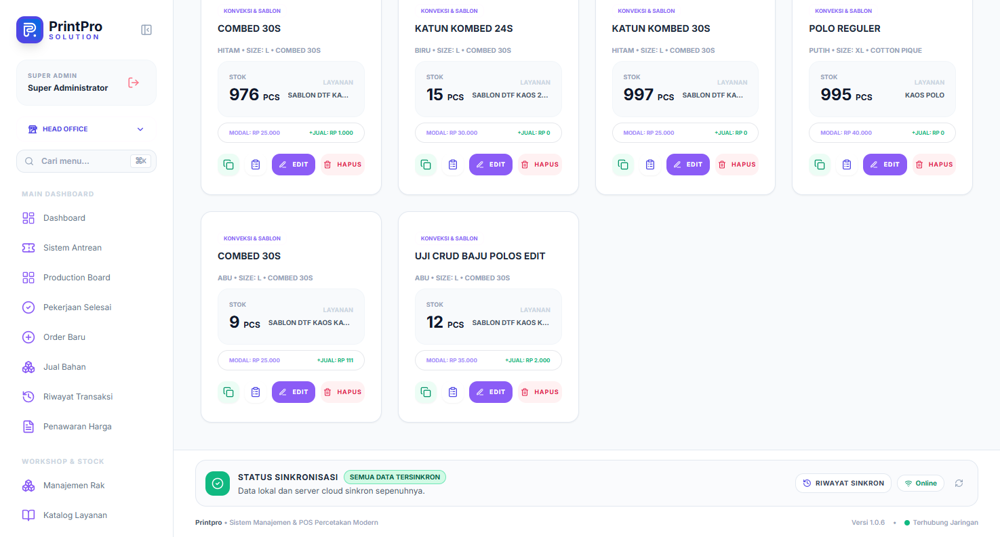
Gambar 14.15 — Nama varian baju yang sudah diperbarui. Hapus varian — Klik HAPUS pada kartu varian, lalu tekan Ya, Hapus pada dialog Hapus Stok Baju?.
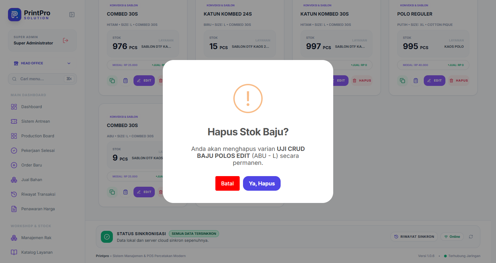
Gambar 14.16 — Dialog konfirmasi hapus varian baju. Verifikasi penghapusan — Muat ulang halaman. Varian uji tidak lagi muncul dan daftar kembali ke jumlah semula.

Gambar 14.17 — Daftar kembali normal setelah varian uji dihapus.
Gunakan tombol Stock Opname untuk menyesuaikan stok setelah hitung fisik, dan Clone ke cabang lain untuk menduplikasi varian ke cabang lain tanpa membuat ulang dari nol.
14.3 Stok buku
Halaman Stok Buku mengelola varian buku beserta spesifikasi cetak dan jilidnya: layanan katalog yang ditautkan, ukuran/dimensi, jenis kertas isi, jumlah halaman, tipe cover, laminasi, dan finishing penjilidan. Setiap varian memiliki HPP, harga tambahan, serta stok per cabang.
Alur CRUD stok buku
Lihat daftar — Menu Stok Buku menampilkan filter cabang dan satu kartu per varian buku. Setiap kartu memuat tombol Clone Varian ke Cabang Lain, Edit Varian, Stock Opname, dan Hapus Varian.
Gambar 14.18 — Daftar varian buku sebelum perubahan. Tambah varian — Klik TAMBAH BUKU. Panel TAMBAH VARIAN BUKU terbuka.
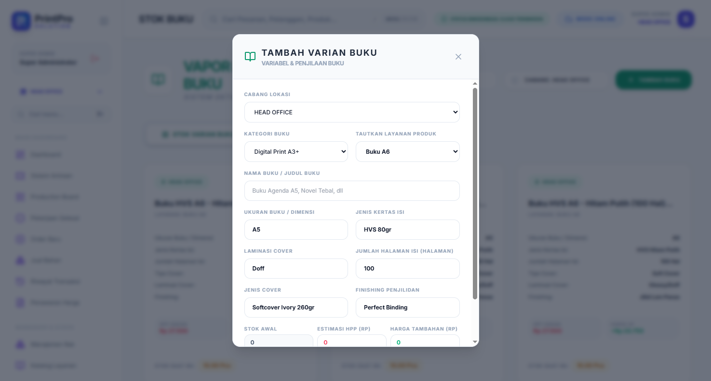
Gambar 14.19 — Panel tambah varian buku yang masih kosong. Isi detail — Pilih Kategori Buku lalu Tautkan Layanan Produk, kemudian isi Nama Buku/Judul, ukuran, jenis kertas isi, laminasi cover, jumlah halaman, jenis cover, dan finishing. Lengkapi Stok Awal, Estimasi HPP, dan Harga Tambahan.
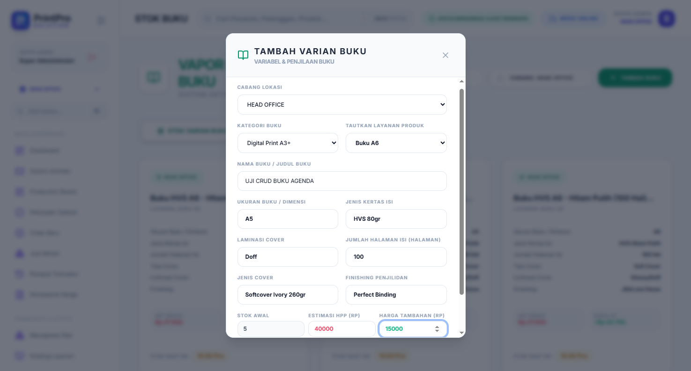
Gambar 14.20 — Data varian buku baru yang sudah diisi. Simpan dan verifikasi — Klik SIMPAN VARIAN. Kartu varian baru langsung tampil lengkap dengan HPP, harga up, dan stok saat ini.
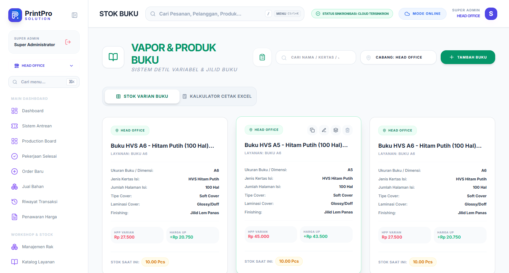
Gambar 14.21 — Varian buku baru tampil pada daftar. Ubah varian — Gunakan kolom CARI NAMA / KERTAS / JILID / UKURAN... untuk menemukan varian, lalu klik Edit Varian. Ubah data yang diperlukan, misalnya judul buku.
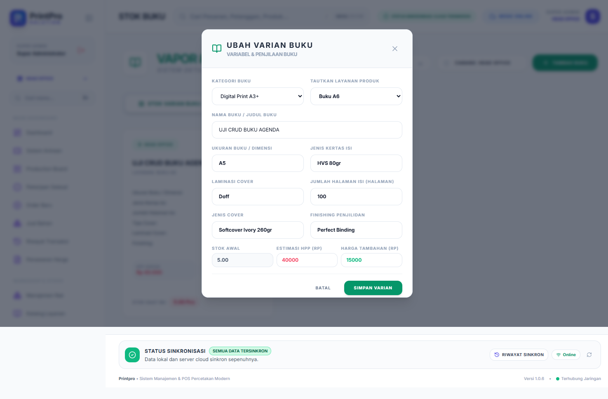
Gambar 14.22 — Panel ubah varian buku yang sudah terisi data sebelumnya. Verifikasi perubahan — Setelah SIMPAN VARIAN, judul baru langsung tampil pada kartu varian.
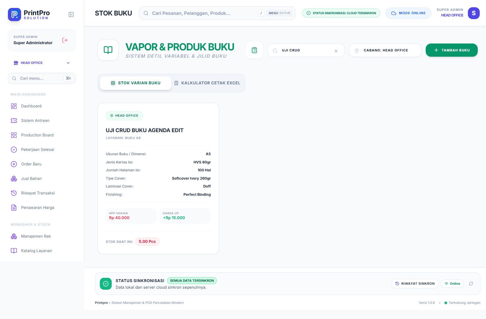
Gambar 14.23 — Judul buku yang sudah diperbarui. Hapus varian — Klik Hapus Varian, lalu tekan Ya, Hapus pada dialog Hapus Varian Buku?.
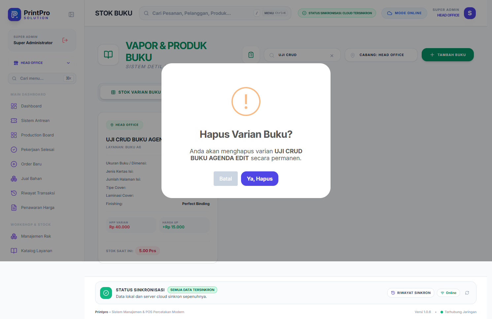
Gambar 14.24 — Dialog konfirmasi hapus varian buku. Verifikasi penghapusan — Muat ulang halaman. Varian uji tidak lagi muncul dan daftar kembali ke jumlah semula.
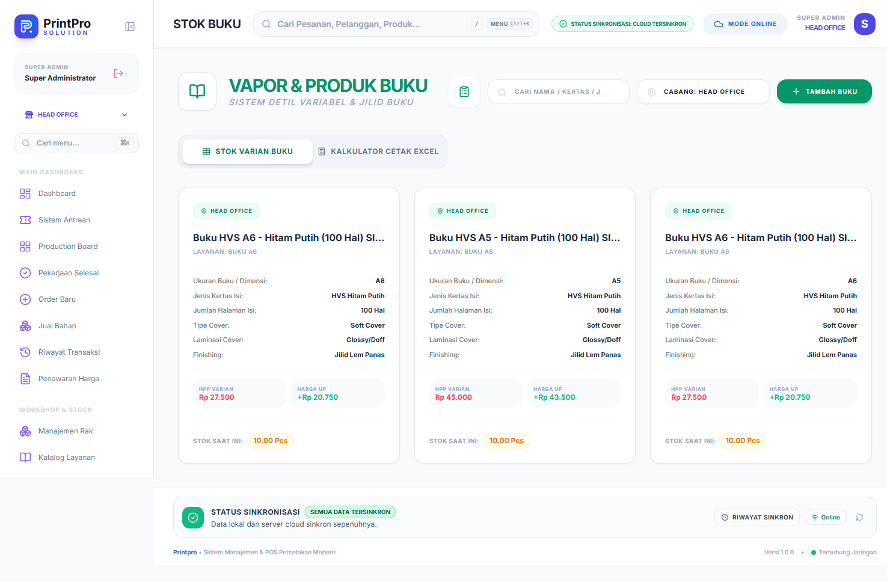
Gambar 14.25 — Daftar kembali normal setelah varian uji dihapus.
Gunakan Stock Opname untuk menyesuaikan stok hasil hitung fisik, Clone Varian ke Cabang Lain untuk menduplikasi varian ke cabang lain, dan tombol Riwayat Opname Buku untuk melihat jejak penyesuaian stok buku.
14.4 Katalog undangan
Katalog undangan berisi model desain beserta tipe, dimensi, pilihan kertas, laminasi, amplop, foil, HPP, dan harga jual acuan. Setiap model juga dapat memiliki resep bahan baku (BOM) agar stok bahan otomatis terpotong saat order.
Alur CRUD katalog undangan
Lihat daftar — Menu Katalog Undangan menampilkan tab Katalog Fisik, filter cabang, pencarian, dan filter format. Setiap kartu memuat tombol Pesan di Order, Hitung, Edit, dan tombol hapus.
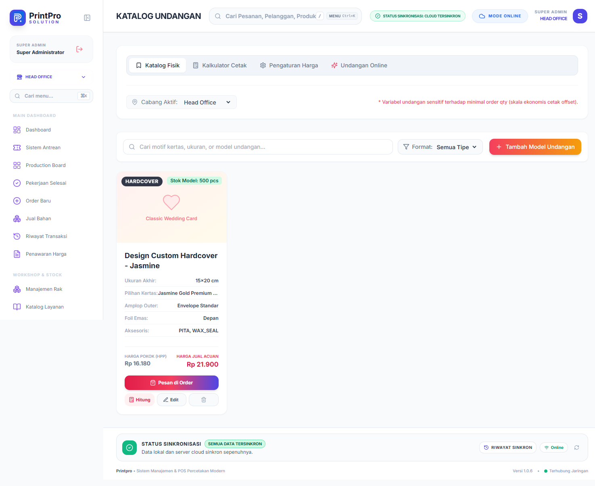
Gambar 14.26 — Daftar model undangan sebelum perubahan. Tambah model — Klik Tambah Model Undangan. Panel Tambah Model Undangan Baru terbuka.
Gambar 14.27 — Panel tambah model undangan yang masih kosong. Isi detail — Masukkan Nama Model Undangan, pilih Tipe Desain, lalu lengkapi dimensi, pilihan kertas, laminasi, amplop, foil, HPP, Harga Tambahan, dan Sediaan Stok Contoh. Bahan baku dapat ditambahkan pada bagian Resep Bahan Baku (BOM).
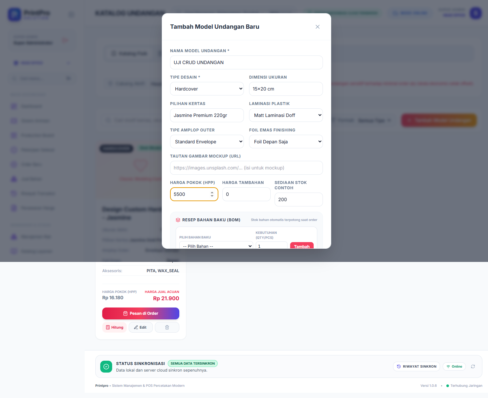
Gambar 14.28 — Data model undangan baru yang sudah diisi. Simpan dan verifikasi — Klik Simpan Contoh Katalog. Dialog Berhasil! muncul dan kartu model baru langsung tampil dengan HPP serta harga jual acuan.
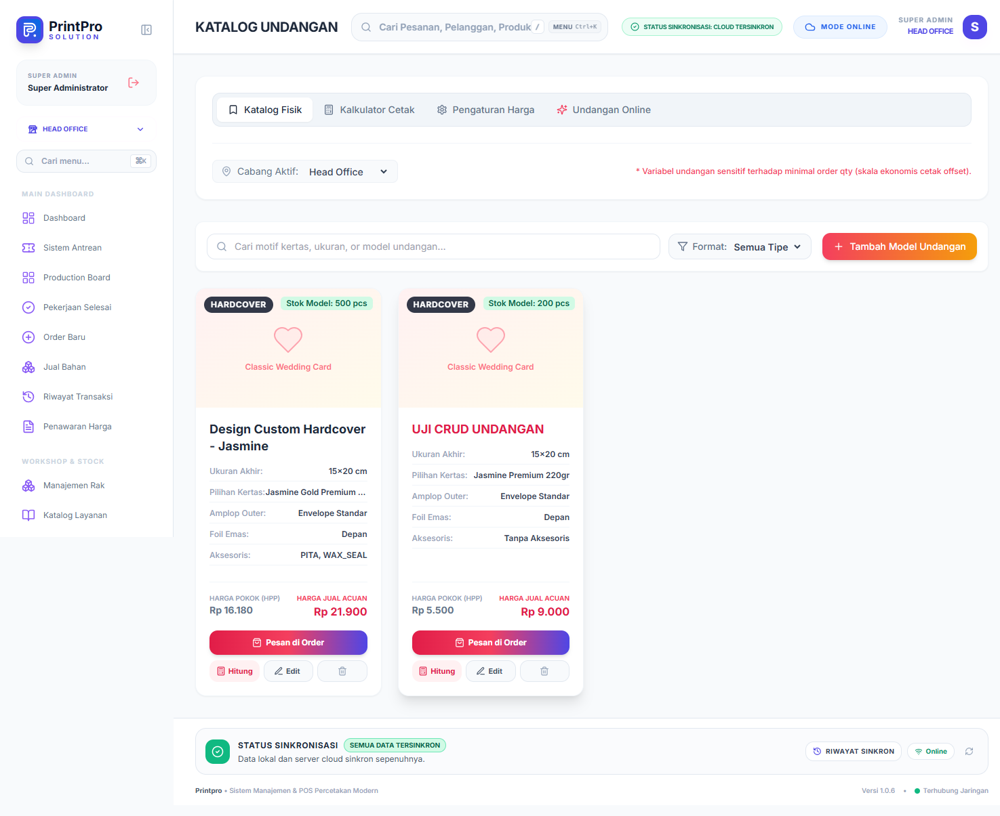
Gambar 14.29 — Model undangan baru tampil pada daftar. Ubah model — Klik Edit pada kartu model. Ubah data yang diperlukan, misalnya nama model atau HPP.
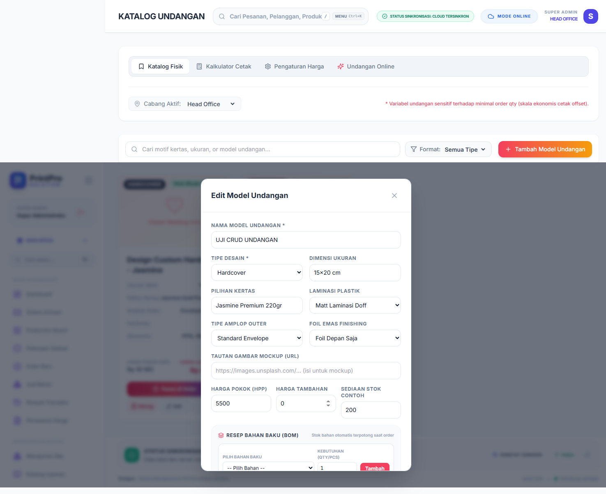
Gambar 14.30 — Panel edit model undangan yang sudah terisi data sebelumnya. Verifikasi perubahan — Setelah Simpan Contoh Katalog, nama dan harga baru langsung tampil pada kartu model.
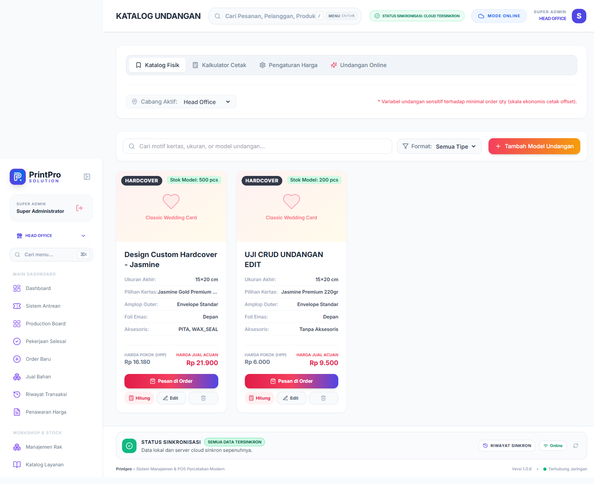
Gambar 14.31 — Nama dan HPP model undangan yang sudah diperbarui. Hapus model — Klik tombol hapus pada kartu model, lalu tekan Ya, Hapus pada dialog Hapus Katalog?.
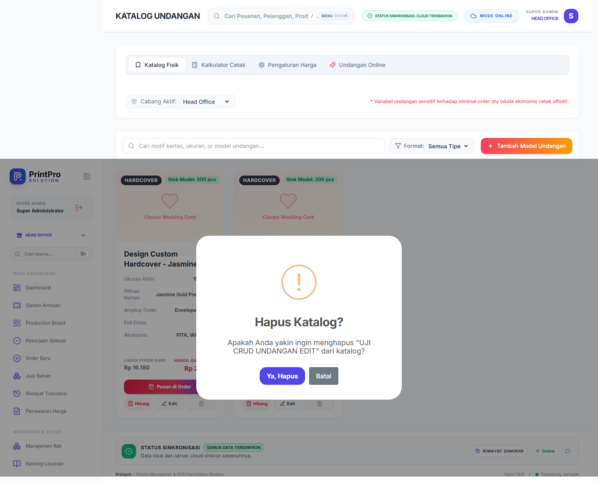
Gambar 14.32 — Dialog konfirmasi hapus model undangan. Verifikasi penghapusan — Muat ulang halaman. Model uji tidak lagi muncul dan daftar kembali ke jumlah semula.
Gambar 14.33 — Daftar kembali normal setelah model uji dihapus.
Gunakan Hitung untuk menyimulasikan biaya berdasarkan kuantitas di kalkulator cetak, dan Pesan di Order untuk langsung membuat order dari model yang dipilih.
14.5 Opname stok
Lakukan minimal sebulan sekali:
- Cetak/ekspor daftar stok sistem.
- Hitung fisik.
- Catat selisih melalui penyesuaian stok.
- Simpan bukti opname.